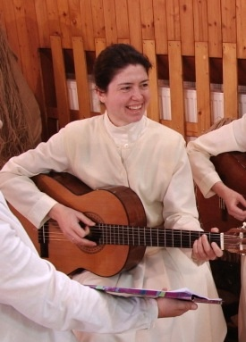
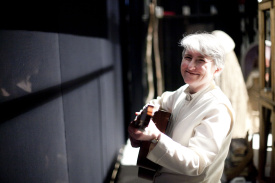

Paradiso a ďalšie tajnosti zo sveta hudobníkov (sr.Yvonne, sr.Lýdia)
Bez hudby by žiadna GCM hra nebola pravou hrou a bez sestier Yvonne a Lýdie z Rodiny Panny Márie by asi žiadna hudba nebola. Tieto rehoľné sestry, a skvelé hudobníčky, majú najväčší podiel na piesňach, ktoré prispeli k silnému umeleckému zážitku všetkých divákov. Určite si viacerí z nás jednotlivé melódie pospevujú dodnes.Hrám na klavíri, organe, gitare a učím sa hrať na čele.
Sr. Lýdia: Do hudobnej školy som chodila na klavír, organ a na priečnu flautu. V Rodine Panny Márie som sa naučila hrať na gitaru a hackbrett, rakúsky ľudový nastroj, ktorý je podobný nášmu cimbalu.
Ktorý je váš najobľúbenejší nástroj? Sr. Yvonne:Môj najobľúbenejší nástroj je asi klavír, potom čelo, hoboj, anglický roh. Všetky nástroje sa mi páčia, keď sa na nich pekne hrá.
Sr. Lýdia: Hoboj.
Od koľkých rokov hráte? Sr. Yvonne:Na klavíri hrám od prvej triedy základnej školy, na gitare od pobytu v internáte GCM. Na organe som sa začala učiť, keď som vstúpila do spoločenstva a na violončele hrám asi piaty rok.
Sr. Lýdia: Na klavíri hrám od šiestich rokov.
Bolo vás treba do hrania nútiť? Sr. Yvonne:Spočiatku áno. Keď som chodila na klavír do ZUŠ-ky, zvyčajne som „cvičievala“ krátko predtým, ako som šla na hodinu. Asi od štrnástich rokov ma už nemusel nikto nútiť. Sestry na internáte ma museli skôr nútiť, aby som už prestala brnkať na gitare.
Sr. Lýdia: Aj áno, aj nie.
Kto zložil pesničky na hru Juan de Dios? Sr. Yvonne:Ja a Páter Luis, brat sestry Margaréty, ktorý pôsobí v Uruguaji ako misionár. V piesni pastierky bola melódia prevzatá od Marca Frisinu.Nada te turbe.
Koľko času vám zabralo vymýšľanie piesní? Sr. Yvonne:To sa dá ťažko povedať. Skôr, ako je pesnička napísaná, zdá sa, akoby si šla v lete na saniach. Ale keď je pesnička hotová, tak sa ti zdá, akoby to bolo spravené raz-dva. Neviem, či sa dá hovoriť o mesiacoch, dňoch alebo hodinách... Každá pieseň sa rodí celkom individuálne. Keď máš melódiu v srdci, ide všetko rýchlo.
Odkiaľ ste čerpali námet pri skladaní pesničiek? Sr. Yvonne:Sestra Mária Marthe mi povedala, pri ktorých scénach potrebuje pesničky. Poslala mi aj celý scenár, aby som bola trocha v obraze. Texty trubadúra už mala napísané, takže uňho som to mala ľahšie. Použila som námet z jednej skladby, ktorú som už raz dávnejšie napísala. V piesni Otčenáš bol text jasný, melódia sa časom akosi pridala. Pri piesni Blázon to bolo ťažšie, dlho som nemala žiaden nápad, ani na text, ani na hudbu. Tak som jednoducho šla do kaplnky a pred bohostánkom som povedala: „Pane, ja naozaj neviem, čo mám písať!“ Takto som chodila do kaplnky niekoľko dní. Potom som si jedného dňa sadla s gitarou v ruke pred prázdny papier a zrazu to šlo. Myslím si, že v kaplnke sa dá nájsť pôvod všetkých námetov. Na tomto mieste by som ešte chcela vysloviť vďaku hlavne všetkým tým, ktorí duchovne prispeli k vzniku jednotlivých piesní. Viem konkrétne o niekoľkých, ktorí sa modlili za inšpiráciu. Vďaka!
Ktorá z piesní je vaša najobľúbenejšia? Sr. Yvonne:Asi Blázon. A potom Otčenáš.
Sr. Lýdia: Otčenáš a Boží blázon.
Ako prebiehali spevácke nácviky? Sr. Yvonne:Z Innsbrucku, kde práve pôsobím, som prišla, až keď bolo všetko viac-menej nacvičené. Nácviky, na ktorých som teda bola, prebiehali veľmi dobre.
Sr. Lýdia: Skvele.
 Ktorá pieseň bola najproblematickejšia a ktorá išla najľahšie? Sr. Yvonne:Neviem to takto posúdiť, lebo som nebola od začiatku na nácvikoch. Viem, že v niektorých skladbách boli na niektorých miestach ťažkosti udržať čistý tón. Hlavne sa to týkalo pomalších pesničiek, ako napr. pieseň pastierky. Inak nejaké veľké ťažkosti neboli.
Sr. Lýdia: So skvelým zborom sa všetky piesne učili perfektne.
Ako sa vám spolupracovalo so spevákmi? Aj vás niečo nahnevalo? Sr. Yvonne:So spevákmi sa mne osobne spolupracovalo dobre. Stretávala som sa s nimi len na rozospievaniach a tam sme si celkom rozumeli. Spievali relatívne čisto a ľahko. A hnevať som sa nemala na čo.
Sr. Lýdia: Spolupracovalo sa výborne. Meškanie niektorých členov zboru a ich následné blúdenie po celom divadle dávalo niekedy zabrať mojej trpezlivosti.
Ako prebiehali nácviky so sólistami? Sr. Yvonne:Sólisti spievali tiež pekne. Keď sa mi dalo, tak som sa s nimi stretla pred vystúpeniami v šatni, aby sme sa trocha rozospievali. Ja som bola s nimi veľmi spokojná, aj keď oni možno so sebou neboli vždy 100 percentne spokojní. Samozrejme, spievali náročné pesničky.
Sr. Lýdia: Naučili sa piesne veľmi rýchlo, v podstate ich vedeli „z listu“ hneď zaspievať.
Zažili ste počas hry aj niečo vtipné? Sr. Yvonne:Keďže sme hrali, boli sme počas predstavení úplne vzadu, prakticky v zákulisí, orientovali sme sa preto len podľa toho, čo sme počuli. Často sme nechápali, prečo sa práve teraz publikum smeje. Nespomínam si teraz na nič mimoriadne vtipné, čo by sme zažili. No napriek tomu sme sa veľa smiali.
Sr. Lýdia: Zažili, keď trubadúr začal omylom najskôr iný text a potom bravúrne „skočil” do správneho odseku cez slovíčko nuž (on už bude vedieť), aby sme sa aj my vzadu za oponou „chytili”.
Na čo budete najviac spomínať? Sr. Yvonne:Na to, čo spomenula sr. Lýdia. Celý čas sme vtedy tŕpli, ako to pôjde ďalej. Po tom nuž sme si všetky vydýchli.
Sr. Lýdia: Na peknú odpoveď p. p. Vontorčíkovej vo videu Behind the scenes“ v súvislosti s divadlom (Nemyslím teraz odpoveď: „Tak určite.“), na malého Ježiška a na príjemnú atmosféru, ktorá panovala medzi všetkými účinkujúcimi.
Ktorá scéna z hry sa vám páčila najviac? Sr. Yvonne:Bola to scéna pri studni, keď sa spieval Otčenáš a keď malého Juana našli. Davidko to zahral veľmi dojímavo. Ale musím povedať, že všetky scény boli dobre do detailov vypracované.
Sr. Lýdia: Scéna malého Ježiška, záver, Juanove posledné slová a scéna v portugalskej dedine, keď sa malý Juan predstavuje Antoniovi.
Ako hodnotíte herecké výkony študentov? Sr. Yvonne:Herci boli všetci vynikajúci. Keď som videla zábery z prvých nácvikov, skoro som neverila vlastným očiam. Nedá sa to porovnať s tým, ako to potom vyzeralo na javisku. Naozaj všetci spravili veľké pokroky!
Sr. Lýdia: Boli výborné. Cítila som ich plné nasadenie a snahu, okrem výkonov chceli divákom sprostredkovať aj nejaké posolstvo.
Viete si vysvetliť, prečo speváci pri rozospievaní vždy chceli spievať len Paradiso z filmu Svätý Filip Neri? Sr. Yvonne:Neviem, ale myslím si, že preto, lebo to má jednoduchú a veselú melódiu, čo sa dá ľahko zapamätať. A na rozospievanie je to fajn cvičenie.
Sr. Lýdia: Lebo každý človek sa dobre cíti v „paradise“, čiže v raji.